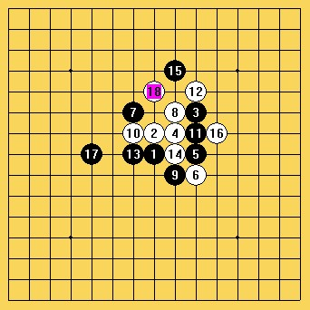
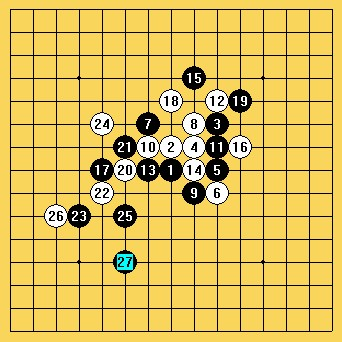
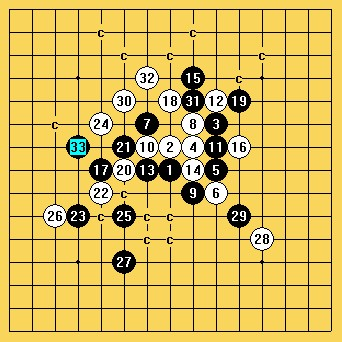
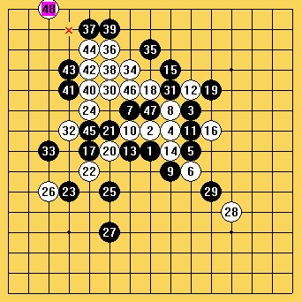
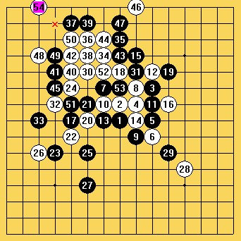
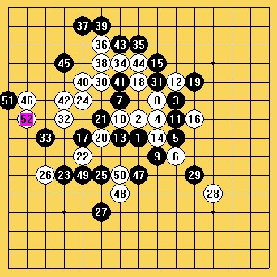
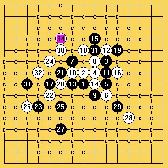
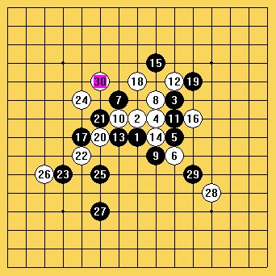
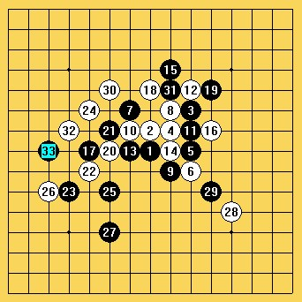

自评在ORC的一局棋，请各位指点！
#1 自评在ORC的一局棋，请各位指点！ 作者：中中 发表时间：2012-10-14 11:00:35
昨晚跟好友小宝在ORC下了一局棋，耗时约3h，整局棋比较激烈，相对以往我们的对局而言，质量较高，故在此作些分析。请各位棋友不吝点评！
疏星开局，我执白。为了使局面显得新鲜，白选择了一个比较陌生的6，而黑似乎对这个走法也并不熟悉，开局交换到16手，应该说，比较正常，白略有优势。

黑17-E8，形成两个3，颇有气势。白对于18的处理，从我个人的角度来讲，是一种提高，按以前的思路会有18-F9冲四，而实战中的18简单又实用，在右上角形成vct，黑棋被动。
行至23手，黑在下方有一定攻势，白抱着黑棋在下无杀的想法并兼顾在左上角的进攻，实战24-E10，但此处白棋给黑留下了强烈的进攻机会，25之后，白不好应对。27是很变态的一手！黑做V连攻，十分吓人！

此时2-14-6眠三发挥作用，跳冲形成黑横线的长连，致使其vcf不再成立，24的大胆也正是基于这一点。
30手白棋做V反攻，黑31强防。32若于G12活三进攻，则33可防于D9并做杀，白棋无防。故实战中32活在了D9，消除黑的反击，并打算做些交换使局面整体趋于平衡。

可是，真有天上掉馅饼的好事！实战黑33防于C8，白便毫不犹豫毫不收敛地展开进攻，虽然没有算清后续进攻的详细路线，但抱有必杀之决心。34到38没有考虑太多，感觉要进攻必然要这么走。39之后黑在斜线能够一定程度地消除白棋部分攻击，40手长考，落在了E11，使得黑棋对于白的进攻无法形成太大干扰。


实战41防在了G11，引起白又一阵长考。当时42考虑了两个点，D12，D10，实战中选择了D10(局后拆D12白也必胜)。黑43-G13，45-D12，白46选择在B10给出最后致命一击，黑47-H6,49-E6,51-A10挣扎，52-B9，黑投子认负。

对局过后小宝给我展示了一个非常漂亮的34，与大家分享。见下图：

［此帖子已被 中中 在 2012-10-14 13:05:27 编辑过］
［ 小小亦默 于 2012-10-14 19:36:29 时花20金币送鲜花一朵］
［ 小小亦默 于 2012-10-14 19:36:29 时花20金币送鲜花一朵］
［ 小小亦默 于 2012-10-14 19:36:29 时花20金币送鲜花一朵］
［ 华夏小宝 于 2012-10-31 19:21:25 时花20金币送鲜花一朵］
［ 华夏小宝 于 2012-10-31 19:21:25 时花20金币送鲜花一朵］
#2 Re:自评在ORC的一局棋，请各位指点！ 作者：小小亦默 发表时间：2012-10-14 11:21:24
 无图
无图
#3 Re:自评在ORC的一局棋，请各位指点！ 作者：山东歪歪 发表时间：2012-10-14 12:10:22
无图无真相~
#4 Re:自评在ORC的一局棋，请各位指点！ 作者：吉小鼠 发表时间：2012-10-14 12:56:24


 偶是好人 图片顺序是这样的~~
偶是好人 图片顺序是这样的~~
［ 小小亦默 于 2012-10-14 19:37:03 时花20金币送鲜花一朵］
［ 小小亦默 于 2012-10-14 19:37:03 时花20金币送鲜花一朵］
［ 小小亦默 于 2012-10-14 19:37:03 时花20金币送鲜花一朵］
［ 小小亦默 于 2012-10-14 19:37:03 时花20金币送鲜花一朵］
#5 Re:自评在ORC的一局棋，请各位指点！ 作者：裁决殿雪月 发表时间：2012-10-14 13:39:36
这个6貌似蛮长见的……
吼吼
#6 Re:自评在ORC的一局棋，请各位指点！ 作者：用心学习 发表时间：2012-10-14 21:57:52
应该说是最强防吧